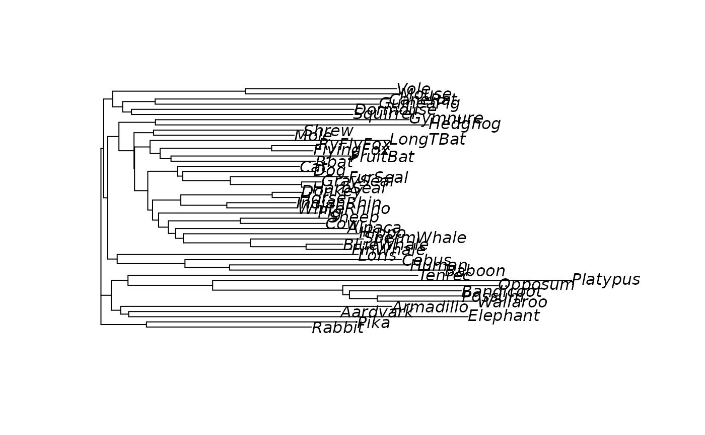

Marginal reconstruction of the ancestral character states.
Arguments
- object
an object of class pml
- type
method used to assign characters to internal nodes, see details.
- ...
Further arguments passed to or from other methods.
- x
an object of class ancestral
- tree
a tree, i.e. an object of class pml
- data
an object of class phyDat
- cost
A cost matrix for the transitions between two states.
Value
An object of class ancestral. This is a list containing the tree with
node labels, the original alignment as an phyDat object, a
data.frame containing the probabilities belonging to a state for all
(internal nodes) and the most likely state.
Details
The argument "type" defines the criterion to assign the internal nodes. For
ancestral.pml so far "ml and marginal (empirical) "bayes" and for
ancestral.pars "MPR" and "ACCTRAN" are possible.
The function return a list containing the tree with node labels, the original
alignment as an phyDat object, a data.frame containing the
probabilities belonging to a state for all (internal nodes) and the most
likely state. For parsimony and nucleotide data the most likely state might
be ambiguous. For ML this is very unlikely to be the case.
If the input tree does not contain unique node labels the function
ape::MakeNodeLabel is used to create them.
With parsimony reconstruction one has to keep in mind that there will be often no unique solution.
The functions use the node labels of the provided tree (also if part of the
pml object) if these are unique. Otherwise the function
ape::MakeNodeLabel is used to create them.
For further details see vignette("Ancestral").
References
Felsenstein, J. (2004). Inferring Phylogenies. Sinauer Associates, Sunderland.
Swofford, D.L., Maddison, W.P. (1987) Reconstructing ancestral character states under Wagner parsimony. Math. Biosci. 87: 199–229
Yang, Z. (2006). Computational Molecular evolution. Oxford University Press, Oxford.
Author
Klaus Schliep klaus.schliep@gmail.com
Examples
example(NJ)
#>
#> NJ> data(Laurasiatherian)
#>
#> NJ> dm <- dist.ml(Laurasiatherian)
#>
#> NJ> tree <- NJ(dm)
#>
#> NJ> plot(tree)

# generate node labels to ensure plotting will work
tree <- makeNodeLabel(tree)
fit <- pml(tree, Laurasiatherian)
anc.ml <- ancestral.pml(fit, type = "ml")
anc.p <- ancestral.pars(tree, Laurasiatherian)
# plot ancestral sequences at the root
plotSeqLogo( anc.ml, 48, 1, 20)
 plotSeqLogo( anc.p, 48, 1, 20)
plotSeqLogo( anc.p, 48, 1, 20)
 # plot the first character
plotAnc(anc.ml)
# plot the third character
plotAnc(anc.ml, 3)
# plot the first character
plotAnc(anc.ml)
# plot the third character
plotAnc(anc.ml, 3)